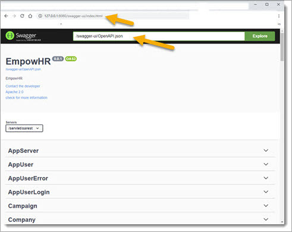

The Swagger interface shows all the Model REST API calls, and is included in the generated Application.
This needs to be generated by choosing menu "Generators
/ Open API" and selecting directory "swagger-ui". This creates the file OpenAPI.json.
After generating, use this link to display in browser: "http://127.0.0.1:8080/swagger-ui/index.html".
